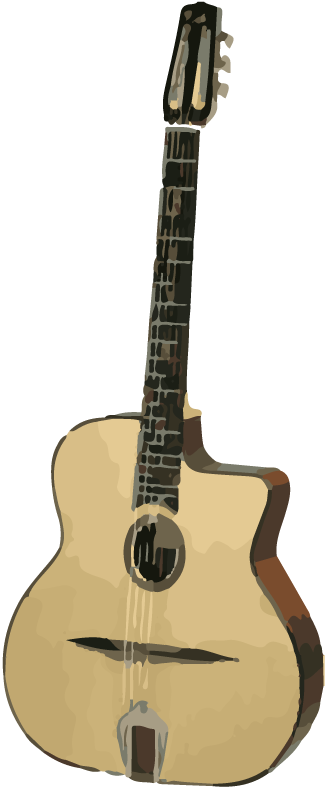

Oh, if you can't read my handwriting above. I am Jade Manrique. I am just some dude who loves art and has been creating logos and subconsciously studying typography. Answering the question, "Who am I", is a pretty loaded question. So lets break it down into some more parts.
I love to walk. I love to play guitar. I have been walking since a few months after birth and I have been playing guitar since I was 7. Those are some fundamental characteristics about myself. It's funny because I love walking enough I will turn down rides which people think is really weird. But I just hate getting a ride if I could walk it. It actually bothers me when someone keeps insisting I get a ride and gets mad at me for denying it. I am not some criminal running rampant. I am just some dude walking. Guitar is just in my life. I am not planning on being famous or performing. I will just be the old man in the rocking chair with his banjo.
I was a baby when I was in Los Angeles. We lived in a small studio by "The Wash" and took showers on the roof with a hose. We also lived next to the studio of the band Rage Against the Machine. Apparently, the lead singer of the band was super short, lanky, and always riding his bike. When I was getting older, we moved to a wealthy suburb called Ladera Ranch. It was a great place to grow up as a kid. Superficial in retrospect, but as a kid, I felt pretty invulnerable to that. At the end of 5th grade, I moved to what I consider my home forever, San Francisco. Well, I lived another rich suburb called Mill Valley. I spent a lot of time in the city though. This place shaped every part of who I am now because it was a good balance of happy, hippy, sunny people of Marin and the crazy night life of San Francisco.
Ever since I was a kid, I would design fake logos and menus for our families recipes. It was fun and I was happy getting positive reactions to the things I made. My dad has a guitar laying around so I would just try my best to learn songs by ear. The first song I learned was, Come As You Were by Nirvana. 3 notes on one string. Nothing special. Now that I have advanced in my skills, I would love to design logos and branding for anybody who needs it. It's easy for me to do and I can do it quickly. It's just what I do now. I AM DESIGNER.
All the Adobe applications. Simple as that. Started using Adobe Photoshop since 2008. Check out my portfolio to get a better understanding of my skills and the way I complete projects.